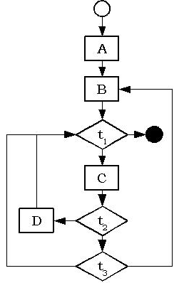

|
Domande Tetty - Capitolo 3
Torna alla pagina di Tetty | Vai al Capitolo 3
:: Domande Capitolo 3 ::
- Che cos'è un'asserzione?
- Un costrutto condizionale che controlla il soddisfacimento di u a proprietà invariante
- Che cos'è la correttezza parziale di un programma?
- La garanzia che il programma , se termina, produce un risultato che soddisfa la specifica
- Come si dichiara in C, C++ e Java una matrice 10 per 10 di interi?
- In C, C++ e Java una variabile:
- deve essere dichiarata prima di poter essere usata
- A che cosa il costrutto for è semanticamente equivalente?
- Che cosa si intende per "attività di gestione" nella programmazione strutturata?
- una decisione, una selezione o un'iterazione
- Qual'è lo scopo della presenza dei tipi in C, C++ e Java?
- aiutare il programmatore ad evitare certi errori comuni
- Qual'è in C, C++ e Java la sintassi dell'assegnamento?
- <id_variabile> = <espressione>
- Qual'è la differenza tra funzione e procedura?
- una funzione restituisce un valore, una procedura
- Qual'è il vincolo sulla profondità posto dalla programmazione strutturata?
- non più di tre livelli di strutture di controllo una dentro l'altra
- Come si costruisce in C, C++ e Java un blocco di istruzioni eseguite in sequenza?
- scrivendole una di seguito all'altra e racchiudendole tra graffe
- A quale costrutto C, C++ e Java corrisponde la nozione di tabella di salto?
- C, C++ e Java sono linguaggi:
- Qual'è l'idea che sta alla base della dimostrazione del Teorema di Böhm-Jacopini?
- trasformare un programma con salti in un unico ciclo while contenente tanti if
- Il Teorema di Böhm-Jacopini costituisce:
- una giustificazione matematica della programmazione strutturata
- Che cosa si intende per "attività di processo" nella programmazione strutturata?
- Che cos'è un "modulo" nella programmazione strutturata?
- un blocco di codice con esattamente un punto di entrata e un punto di uscita
- Che cos'è la trasformazione di Ashcroft e Manna?
- Una dimostrazione alternativa del Teorema di Böhm-Jacopini
- Un programma senza salti:
- può essere meno efficiente di un equivalente programma con salti
- Quali costrutti di selezione mettono a disposizione i linguaggi C, C++ e Java?
- Come si dichiara in C, C++ e Java una matrice 10 per 10 di interi?
- I commenti sono delimitati, in C, C++ e Java:
- In C, C++ e Java una variabile
- deve essere dichiarata prima di poter essere usata
- Che cosa sono le istruzioni break e continue?
- due istruzioni di salto "controllate"
- Qual'è un insieme minimale di costrutti di controllo sufficiente per realizzare qualsiasi algoritmo?
- esecuzione in sequenza e costrutto while
- Che cosa significa "coesione funzionale"?
- essere volto a ottenere un solo scopo a realizzare una sola funzionalità
- Qual'è la differenza tra il costrutto while e il costrutto do ... while?
- il secondo esegue almeno una volta il suo corpo
- In C, C++ e Java l'espressione int x[10] dichiara un vettore:
- La stringa _return può essere l'identificatore di una variabile C, C++ o Java?
- Esempi di tipi predefiniti in C, C++ e Java sono:
- Che cosa si intende con il termine "test di regressione"?
- la rivalidazione di un programma in seguito a una modifica
- Per la trasformazione di Ashcroft e Manna, questo diagramma contiene:

- un blocco con più di un test e almeno un ciclo
- due cicli con più di un blocco e un ciclo senza test
- un blocco con più di un ciclo e almeno un test
- solo blocchi con un solo test e blocchi senza cicli
Torna alla pagina di Tetty | Vai al Capitolo 3
|